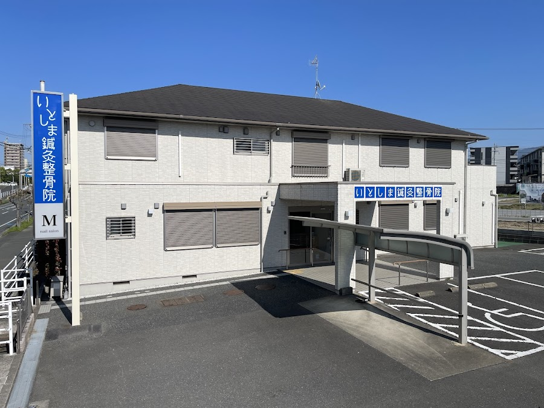
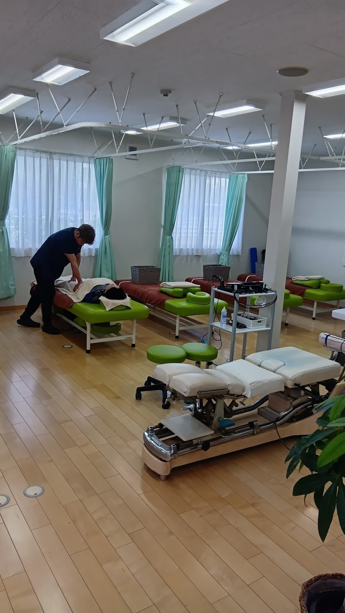
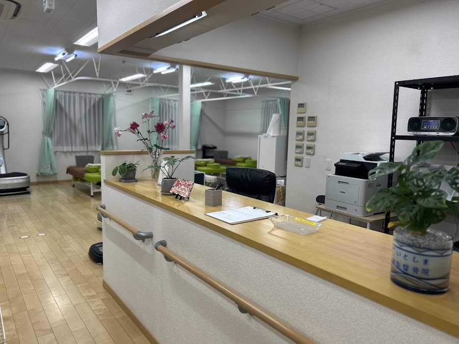

施術累計3万人・スペシャリスト3名体制
東洋医学と西洋医学を組み合わせた複合施術

※ 写真提供：Google マップ
About
糸島市前原西にあるいとしま鍼灸整骨院。40年以上のキャリアを持つ鍼灸師と、22歳にして院長となった実力派整骨師が在籍する、スペシャリスト3名体制のクリニックです。
東洋医学（鍼灸）と西洋医学（整骨・接骨）を組み合わせた複合施術が最大の特徴。肩こり・腰痛・スポーツ障害から、美容鍼・産後骨盤矯正まで、幅広い症状に対応します。
土日祝日も年中無休で9時〜21時まで営業。仕事帰りや休日のご来院も大歓迎です。無料相談受付中。
Staff
40年以上の経験を持つ鍼灸のスペシャリスト。慢性的な痛み・不定愁訴・美容鍼まで、東洋医学の深い知見で丁寧に施術します。
若くして院長になった実力派の整骨師。整形外科での経験も持ち、スポーツ障害・急性期の外傷から慢性疾患まで対応します。
プロアスリートのトレーナー経験を持つスタッフが、スポーツ障害・フォーム改善・パフォーマンスアップまでサポートします。
Gallery


※ 写真提供：Google マップ
Hours & Access
| 月曜日 | 9:00〜21:00 |
|---|---|
| 火曜日 | 9:00〜21:00 |
| 水曜日 | 9:00〜21:00 |
| 木曜日 | 9:00〜21:00 |
| 金曜日 | 9:00〜21:00 |
| 土曜日 | 9:00〜21:00 |
| 日曜日 | 9:00〜21:00 |